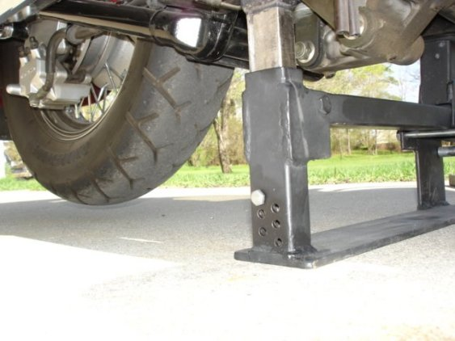

Note** Because of improvements, some of the images may be different than your lift. If you have any questions, please get in touch with me.
I also recommend you have someone to assist you the first time.
Overall View Of Lift
Install rubber frame protectors on frame tabs (both sides). Remember to remove these when lift is removed!!
Slide lift under bike from the "Right" side

Adjust right side riser up as far as you can below right side tab on bike framewith the handlebars turned fully left.
Line up left side lift riser below left side tab on bike frame 
Insert lift handle
Handle inserted

With handle inserted, carefully press on handle with hand or foot, until risers are engaged in frame tabs

Then depress handle all the way down, and insert pin in position to hold bike in lifted position

Bike in lifted position and handle removed!